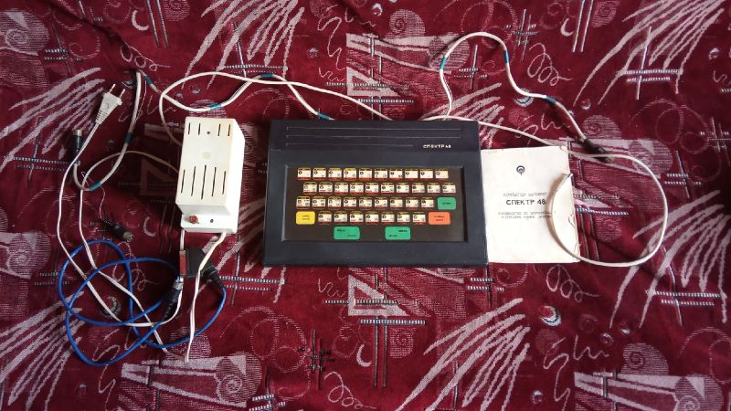

| Годы производства | Предположительно с 1990 г. |
| Производился | Завод "Компонент" |
| Процессор | Zilog Z80 |
| Частота | 4 МГц |
| Скорость | 105% |
| ОЗУ | 48КБ |
| ПЗУ | 16КБ |
| Преемущества | Оригинальный дизайн корпуса, тумблер для переключения изображения "негатив/позитив", два видеовыхода, встроенный тест магнитофона, поддержка русского языка, слот питания использует AC-разъем. |
| Недостатки | Плохое качество выдаваемого изображения, низкая совместимость с оригиналом, плёночная клавиатура. |
Компьютер Бытовой Спектр 48
Спектр 48 или Компьютер Бытовой "Спектр 48" - отечественный клон ZX Spectrum 48k, произведенный заводом "Компонент" в г. Ленинград, и позднее Санкт-Петербург. Тираж производства неизвестен, предположительно не меньше 2500 экземпляров. В распоряжении нашего музея имеется экземпляр с неполной комплектацией. Имеет номер 2128 и судя по мануалу выпущен в июне 1992 года, а продан в июле 1992 года.Комплектация, в данном случае, была не очень большая:
Сам компьютерБлок питания
Кабель для подключения к магнитофону
Мануал
Кабель для подключения по SCART(доделывался самостоятельно).
Основная информация:
За основу данного клона взята достаточно известная и распространенная схема клона Сергея Зонова т.н. Ленинград-1 с незначительными изменениями. В качестве процессора внутри используется оригинальный Zilog Z80 с повышенной частотой до 4МГц, однако мануал также сообщает что существуют версии, где используются U880OD( Это аналог Z80, произведенный в ГДР, подобный используется в клоне Дубна 48к ) и ZO8O4PS( Подобный вообще ни разу не встречал ). Вполне возможно такие тоже существуют, однако это еще предстоит узнать.Компьютер имеет черный пластиковый корпус, на котором используется плёночная клавиатура, которая работает достаточно нестабильно и некоторые клавиши нажимаются через раз, даже пропайка не сильно помогла.
Разъемы:
- СБР - кнопка сброса- ВКЛ. - Кнопка включения и выключения компьютера. Очень оригинальный ход заключается в том, что переключатель питания поставлен не на блок питания, а в корпусе самого компьютера. Сложно сказать насколько это удобно
- ИНВ - Тумблер/переключатель сигнала. В случае если подключение неверное и цвета инвертируются, нажав эту кнопку можно сделать чтобы цвета стали нормальными. Полагаю, что просто меняет + и - на какой то из микросхем вывода видеосигнала.
- ДЖ. - Порт для джойстика. В данном случае это джойстик типа Kempston
- МГ. - Вход и выход на магнитофон. То есть и чтение и запись одновременно используют один слот.
- ТВ. - Выход видеосигнала для подключения к ч/б телевизору
- ЦВ. - RGB выход для подключения к цветному телевизору или же к монитору а ля Электроника ВТЦ
-5В - Соответственно разъем для блока питания. Интересно то, что он не DIN-разъема, а для типичного AC-адаптера, что кстати говоря хорошо, ведь теперь нельзя случайно включить блок питания не в тот слот.
Интересно то, что компьютер имеет одновременно два видеовыхода, для ч/б подключения и для цветного RGB.
Клон имеет раскладку клавиатуры, аналогичную стандартному ZX Spectrum 48k, при этом также имеет кириллические символы расположенные а ля ЙЦУКЕН. Интересным решением также является разделение пробела на две отдельные кнопки.
ПЗУ данного компьютера в сравнении с оригиналом сильно модифицировано, имеется встроенный тест магнитофона и поддержка русского языка. При включении клон выдает сообщение "1991 Бытовой компьютер СПЕКТР 48", сам русский язык вызывается командой RANDOMIZE USR 15273, однако на клоне, которым располагаем мы подобная команда не срабатывает.
Звук с компьютера выводится на телевизор.
Блок питания, который шёл в комплекте имел длинные провода. Большим плюсом является то, что сам блок выведен в отдельную коробку, из которой торчат проводки, что очень удобно и не мешает. Как уже было сказано имеет разъем AC на выходе.
Мануал, который шёл в комплекте это одновременно и тех.паспорт, и учебник по языку Basic, и, одновременно, руководство по использованию самого компьютера. В качестве приложения содержал принципиальные и монтажные электрические схемы самого компьютера и блоков питания.
Магнитофонный кабель был модернизирован прошлым владельцем, потому как, по словам человека у которого покупал данный клон, он говорил что данный Спектрум использовался с импортным кассетным магнитофоном Philips, и для этого слот был перепаян. Интересно, что вероятно в оригинале это был одновременно кабель и для чтения и для записи. В самом компьютере были зеркально перепаяны чтение и запись, поэтому долгое время не удавалось понять причину по котором ни одна из программ не хотела читаться.
Кабеля подключения с собой не было, поэтому его пришлось доделать самому.
Комплектующей кассеты с собой не было, и узнать что на ней было к сожалению даже по информации с мануала пока невозможно. В случае, если будет куплен клон с более богатым комплектом, то может быть информация будет дополнена.
Сам же клон имеет низкую совместимость с оригиналом, в частности у нас на данном клоне работало прим. 30% программ, которые пробовались запускаться на этой приставке. Независимо от того, велась ли загрузка с кассеты или же с компьютера/телефона Wav-файла игры.
Сам ли компьютер таким попался или же это изначально так должно было быть или это брак, мне сказать трудно. Вполне возможно, если мы найдем ещё один такой - попробуем приобрести и посмотреть как дела будут с ним.
Ссылки:
https://www.youtube.com/watch?v=pVZ3mqlLOas - Видеообзор этого клона автором статьи. Учитывайте что на момент снятия клон у меня был всего неделю и сам обзор снимался 3 года назад, так что информация может немного отличатьсяhttp://superbrain1997.blogspot.com/2016/11/superbrain1997-48-zx-spectrum-48k.html - Более подробный осмотр данного клона, писался тоже достаточно давно, возможно будет обновлен и дополнен в дальнейшем.